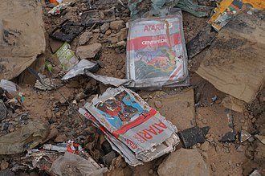

Der Videospiel Crash (in Japan auch als Atari-Schock bekannt) geschah in 1983. Es war eine gross angelegte Rezession in der ganzen Videospielindustrie, die von 1983 bis 1985 vor allem in den USA stattfand. Der Absturz wurde auf mehrere Faktoren zurückgeführt, darunter die Marktsättigung in Bezug auf die Anzahl der Spielkonsolen und verfügbaren Spiele, von denen viele von schlechter Qualität waren, sowie das nachlassende Interesse an Konsolenspielen zugunsten von PCs. Die Einnahmen von Heimvideospiele fielen in 1983 von 3.2 Milliarden Dollar um 97% auf 100 Million Dollar. Das, was nach dem Crash blieb, gilt als die zweite Generation von Konsolen-Videospielen und beim Crash endete die sogenannten goldenen Zeitalter der Arcade-Videospiele. Der Absturz erschütterte eine damals boomende Videospielindustrie und führte zum Bankrott mehrerer Unternehmen, die Heimcomputer und Videospielkonsolen herstellten. Die nordamerikanische Videospielkonsolenindustrie erholte sich einige Jahre später, hauptsächlich aufgrund des weit verbreiteten Erfolgs von Nintendos westlichem Branding für seine FamiCom - Konsole, das Nintendo Entertainment System (NES), das 1985 landesweit veröffentlicht wurde. Die Unternehmen überschätzten sich mit der Sättigung des Marktes und haben 175% zu viele Videospiele erstellt, worin die meisten mit schlechter Qualität gemacht waren. Ein bekanntes Beispiel ist das E.T. Spiel, das so wenig verkauft wurde, dass man mehrere Millionen Kopien des Spiels in einer Wüste vergraben hat (Wikipedia, 2022).
Atari Konsole
https://www.watson.ch/digital/games/891501590-atari-bringt-40-jahre-nach-dem-atari-vcs-2600-eine-neue-spielkonsole
Teilweise erhaltene Gehäusen von Atari Spielen vom Jahr 1983
https://en.wikipedia.org/wiki/Video_game_crash_of_1983